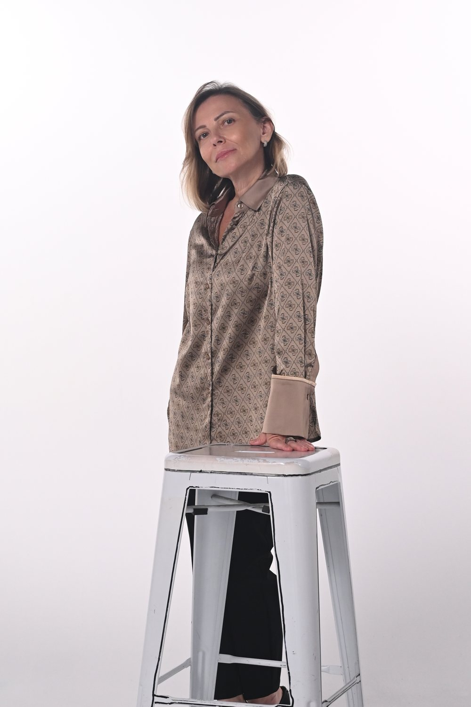
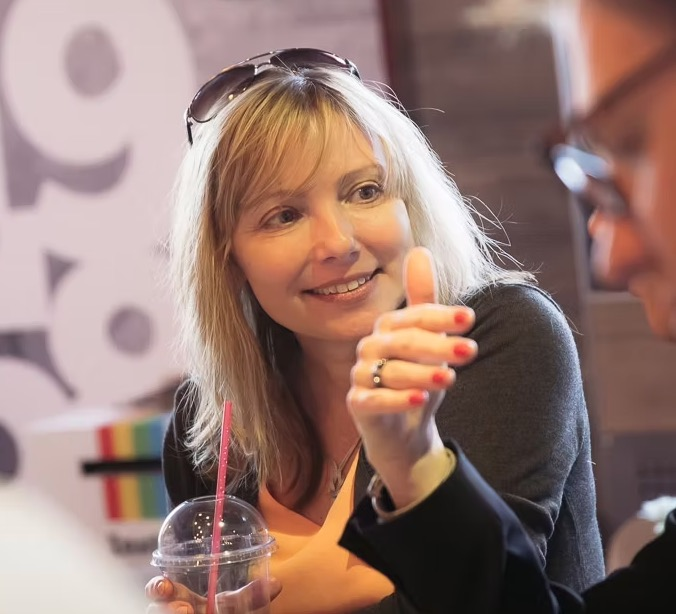

Перезапуск бренда
Стратегия перезапуска KFC Israel и развитие сети с последующим масштабированием подхода на другие рынки.
Увидеть систему целиком.
Выстроить следующий этап.
Помогаю бизнесу находить и реализовывать стратегию устойчивого роста.
Я работаю с собственниками и лидерами в моменты, когда прежняя логика перестает давать результат — и нужен новый взгляд на бизнес, роль и направление движения.
Понимаю логику бизнеса и природу человека — как разные уровни одной системы.
Обо мне
Более 20 лет я работала в международном бизнесе и стратегическом маркетинге: развивала бренды и рынки, выстраивала маркетинговые функции, работала с собственниками, руководителями и франчайзи.
Постепенно мой профессиональный интерес расширился: от того, как устроены рынки и компании, — к тому, как устроен человек, принимающий решения и создающий эти системы.
Сегодня в моей работе соединяются экономика, MBA, психология, стратегический маркетинг и инструменты понимания природы человека — как разные уровни одного системного взгляда.
Направления
Бизнес не существует отдельно от людей.
А человек — отдельно от среды и своей роли на данном этапе жизни.
Для бизнеса
Для компаний и предпринимателей, которым важно найти и реализовать возможности прибыльного роста.
Результат Ясная стратегия и отлаженная система маркетинга, работающая на цели бизнеса.Личные консультации
Для людей и команд в точке личного или профессионального перехода, которым важно понять, как жить и действовать дальше — в согласии с собой и реальностью своей жизни.
Результат Понимание следующего этапа и своего способа в него войти.Для бизнеса
Моя роль — увидеть бизнес в целом, определить ключевую точку роста и выстроить маркетинг, чтобы придать бизнесу новый импульс и превратить стратегию в работающую систему.
Мне важен не результат любой ценой. Важен результат, который усиливает и бизнес, и человека
Я подключаюсь, когда необходимо:
Стратегия перезапуска KFC Israel и развитие сети с последующим масштабированием подхода на другие рынки.
Работа с брендами и франчайзи на 24 рынках: стратегия, портфель, ценообразование, инновации и выход на новые рынки.
Работа с собственниками и руководителями там, где необходимо пересобрать стратегию, роли, решения и способ движения вперед.
Личные консультации
«Доверяя своей природе» — индивидуальная работа для человека, которому важно понять, каким может быть следующий этап его жизни и как войти в него своим способом.

Особенно важно, когда:
Я вхожу через мышление и восприятие, но рассматриваю человека целиком: его внутренние опоры, роль, среду, ресурс и реальную жизненную ситуацию.
Результат
Более ясное понимание себя, следующего этапа и способа действовать, который действительно может стать вашим.
Особое внимание
Переходы второй половины жизни: новая профессиональная роль, качество жизни, ресурсность, среда, отношения — все, чем могут быть наполнены следующие 15–20 лет.

Биография
20+ лет в международном бизнесе.
Руководство маркетингом, рост, масштабирование и адаптация брендов в разных странах, построение эффективных команд.
KFC, Pizza Hut, International Paper.
Я пишу о стратегическом маркетинге и лидерстве — с особым вниманием к сферам wellness и гостеприимства.
Рассказываю о том, как мышление и восприятие помогают найти внутреннюю опору.
Исследую интегративный подход к здоровому долголетию. Применяю его в собственной жизни и делюсь опытом.
Приглашение
Если вы хотите обсудить задачу бизнеса, личный или профессиональный переход, напишите мне.
На первой встрече мы проясним ваш контекст, главный вопрос и поймем, могу ли я быть вам полезна.